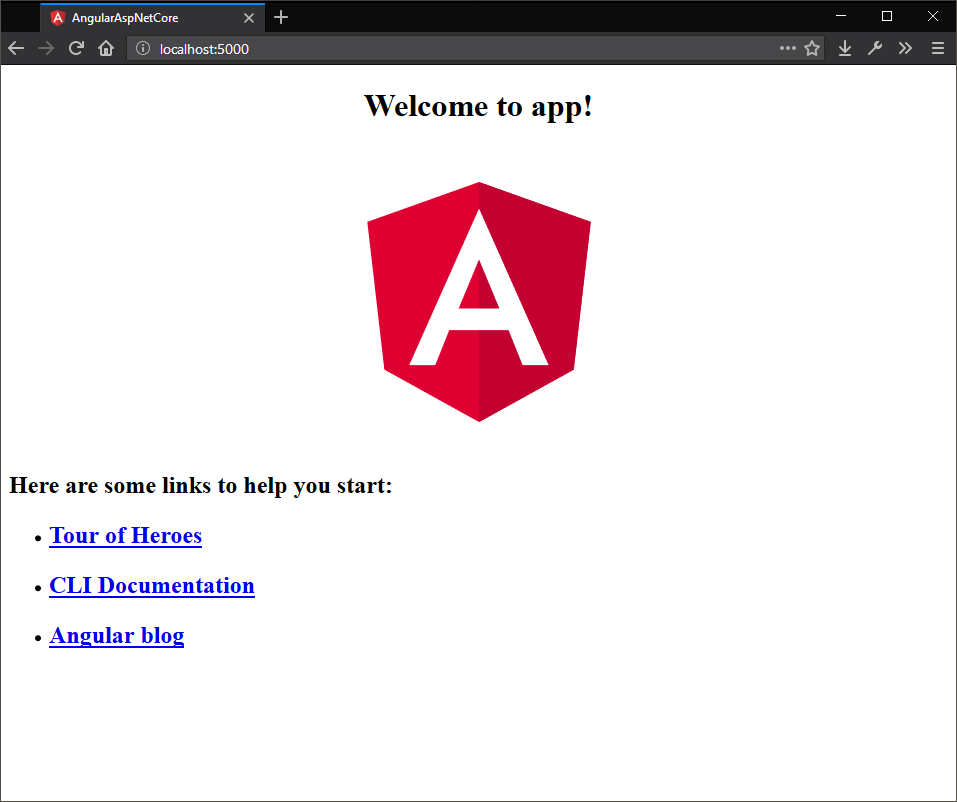
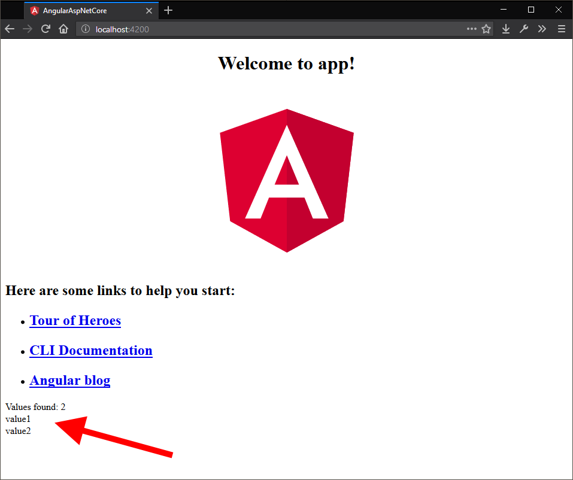

Angular (5) and aspnet core (2) quickstart
Here is a get-up-and-go style post to get going with the angular CLI and aspnet core. Before we begin, there is a template you can use to set (most, if not more) of this up, but it's good to know what is going on behind the curtains.
First things first.
You need some tools installed to get the base project set up.
- dotnet core SDK
- Node
- angular-cli which we'll install using NPM.
Open a command prompt and run the following command:
npm install @angular/cli -g
This will install the angular tooling globally. Time to start creating things!
Project setup.
Find a nice spot on your harddisk where the project will live, I'm starting in C:\workspace\angular. Next, grab a command prompt and run ng new AngularAspNetCore.
The angular-cli will create a new folder called AngularAspNetCore with a new blank angular project inside. Something along the lines below should appear and the angular project is done (for now).
C:\workspace\angular> ng new AngularAspNetCore
create AngularAspNetCore/e2e/app.e2e-spec.ts (302 bytes)
create AngularAspNetCore/e2e/app.po.ts (208 bytes)
Up next is the aspnet core web API project. Move into the AngularAspNetCore folder and create a new web API project with the following command:
dotnet new webapi
Something like below will spew out on the command line:
PS C:\workspace\angular\AngularAspNetCore> dotnet new webapi The template "ASP.NET Core Web API" was created successfully.
Processing post-creation actions...
Running 'dotnet restore' on C:\workspace\angular\AngularAspNetCore\AngularAspNetCore.csproj...
Restore succeeded.
Pulling it all together.
The core of the project is now done, but we need to make some changes first. The aspnet core project we created serves as an API, but it won't serve files to the browser. Let's fix that first.
Pull up your editor of choice and open our newly created project. Open the Startup.cs file and look at the Configure method. The thing we want to add will let our back-end serve static files and also service a default document (index.html).
Update the following:
app.UseMvc();
To:
app.UseDefaultFiles(); app.UseStaticFiles(); app.UseMvc();
Next open the Program.cs file and look at the Main method. We need to set the ContentRoot of the web app so that we can serve files from it.
This will let our API project also serve static content and serve a default document (index.html in our case) when the browser hits the root of the web app (ie: the / url).
Change this:
public static IWebHost BuildWebHost(string[] args) =>
WebHost.CreateDefaultBuilder(args)
.UseStartup
To this:
public static IWebHost BuildWebHost(string[] args) =>
WebHost.CreateDefaultBuilder(args)
.UseContentRoot(Directory.GetCurrentDirectory())
.UseStartup
This tells the dotnet runtime where all the files can be found.
The next change is done in .angular-cli.json, this file controls all the things that ng build will do with our angular app. Find the apps section and look for outDir.
"apps": [
{
It points to the dist folder by default for the compiled angular app. We are hosting this from aspnet core which uses the wwwroot folder for static content so go ahead and change dist to wwwroot.
To make sure we got this right, it's time to start it all up. First thing is building the angular app. Pull up the command prompt again and run ng build inside the project folder. This creates the angular app in the wwwroot folder.
Next run dotnet build to compile the API, after that run dotnet run to start it up. Open a browser and go the URL that was given after running running the API project (in my case http://localhost:5000). You should be greeted with the following
default angular page:

Auto-reloading.
So we have the basics down, but there is a problem. Every time we change something, we need to run ng build and refresh the page. We are not yet using the hot reloading that the angular CLI can give us. To get the hot reloading to work we would have to run ng serve instead of ng build.
The former will wait for changes and rebuild the app on the fly, the latter will only build when the command is given. Running ng serve will start a seperate webserver that hosts only the angular content, that might work for some cases but we since our web API project will also spin up a webserver we are
dealing with 2 webservers instead of just one that serves everything. To get around this we need to proxy some http calls to our web API project, but not everything.
To tell the angular webserver that we want to proxy certain requests, we need to add a file to our project: proxy.conf.json.
Create the file and add the following code to it:
{ "/api": { "target": "http://localhost:5000", "secure": false } }
This will forward any requests to a URL that points to a route starting with /api to localhost:5000 which is where our API is running. To test this you can update the following pieces of code:
app.module.ts
import { BrowserModule } from '@angular/platform-browser'; import { NgModule } from '@angular/core'; import { HttpClientModule } from '@angular/common/http';
import { AppComponent } from './app.component';
@NgModule({ declarations: [ AppComponent ], imports: [ BrowserModule, HttpClientModule ], providers: [], bootstrap: [AppComponent] }) export class AppModule { }
(Import the HttpClientModule so we can inject it into other things.)
app.component.ts
import { Component, OnInit } from '@angular/core'; import { HttpClient } from '@angular/common/http';
@Component({ selector: 'app-root', templateUrl: './app.component.html', styleUrls: ['./app.component.css'] })
export class AppComponent implements OnInit { title = 'app'; result = [];
constructor(private http: HttpClient) { } ngOnInit(): void {
this.http.get('/api/values').subscribe(data => { console.log(data); this.result = <any[]>data; }); } }
(Add some init code to the app module to request some data from our API - on another webserver!)
And add the following to the end of app.component.html
(Render the data we got from the API)
If you've updated all the code to make an HTTP request to the webserver we can start things back up. First run the webserver:
dotnet run
When it's up and running, open a second command prompt and run the following to start serving the angular web app:
ng serve --proxy-config proxy.conf.json
This will launch a second webserver hosting the angular app with hot reloading enabled, our proxy configuration will make sure that any request to URLs starting with /api will be forwarded to our web API. If you've done all of the above and browse to the angular app URL (http://localhost:4200 for me), you should be seeing this page:

It's a lot to take in all at once, but this is a once-per-project setup. You'll get all the nice reloading features while still being able to debug the "real" API when working on the client-side app. Bonus points if you also enable watching on the web API project and you'll get hot reloading on both ends.
dotnet watch run
Righto, here's the auto reloading for dotnet core! :-)
Open the .csproj file and add the following reference:
Restore the packages using:
dotnet restore
You now have access to the watching features when you start the project with the following command:
dotnet watch run
Wew, have some fun with this one, it's all you need to get a boilerplate project set up with angular and aspnet core while still maintaining the best of both during development.